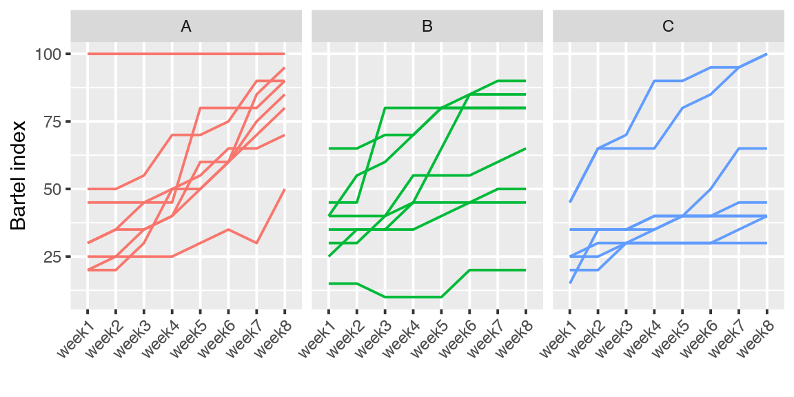
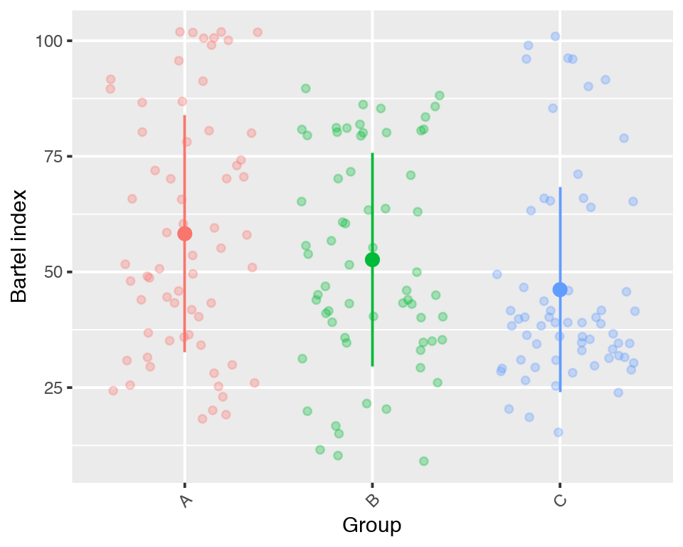
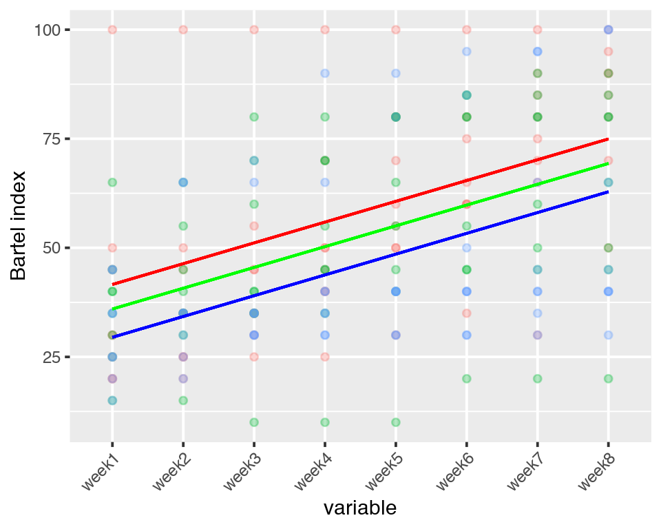
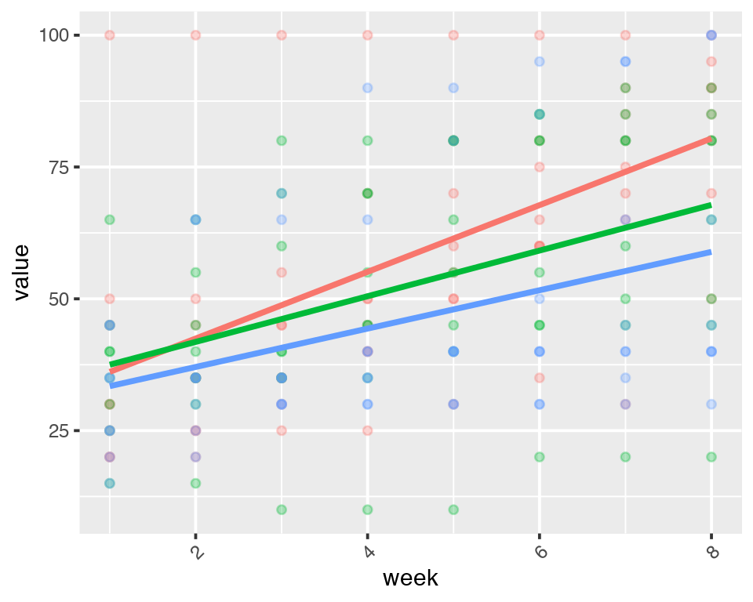
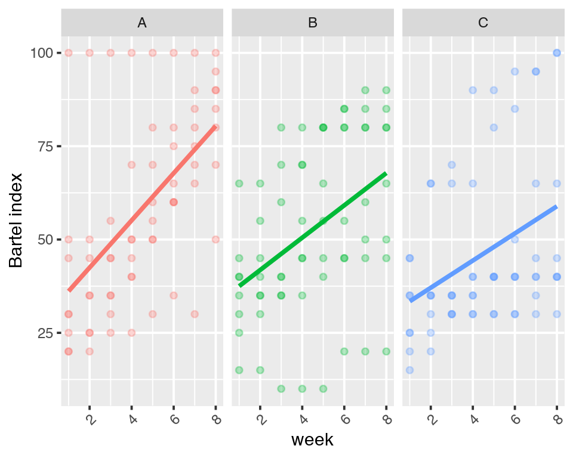
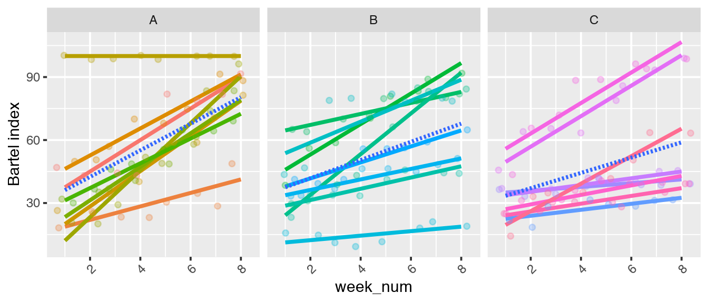
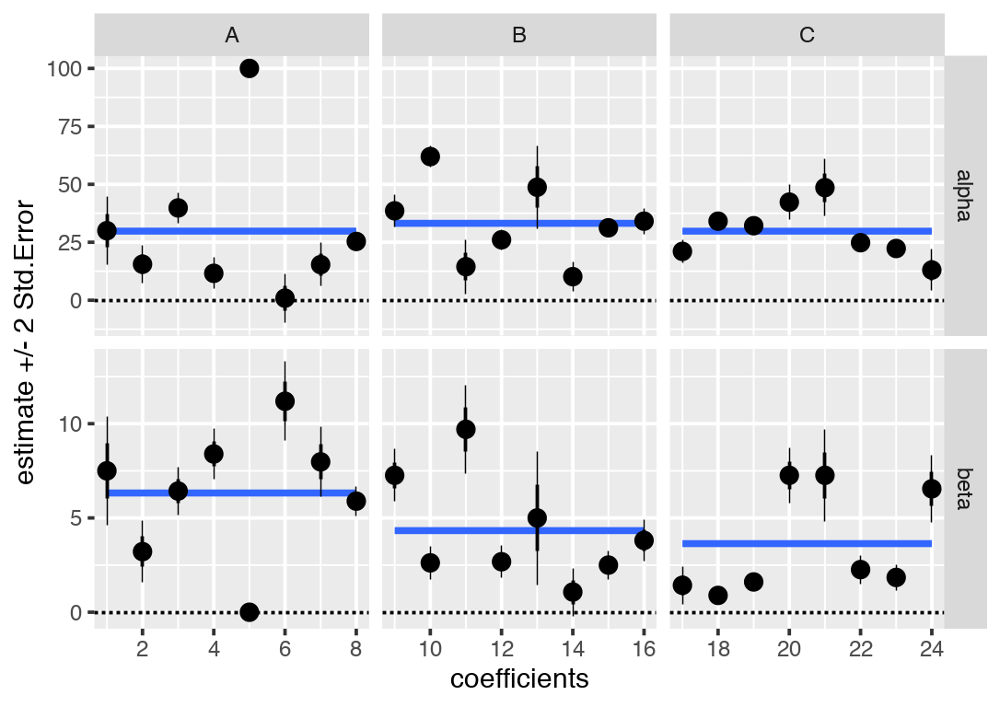
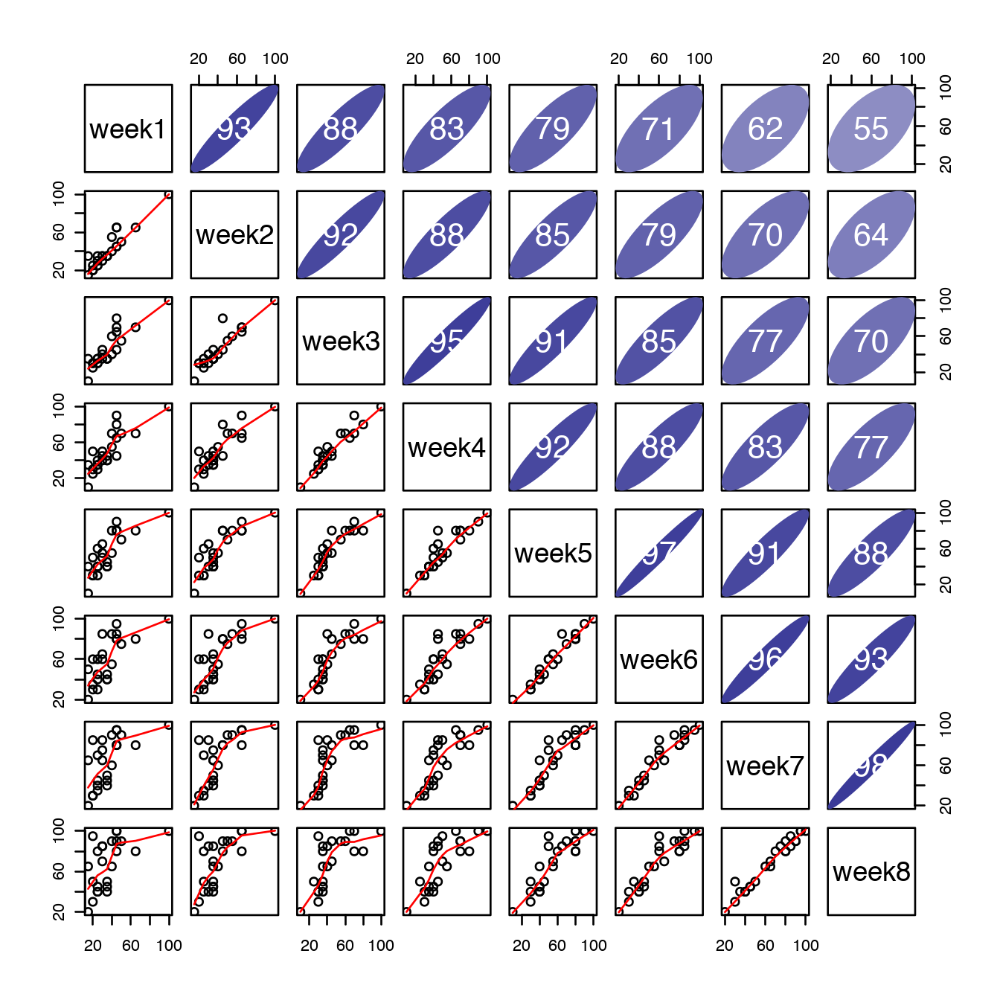
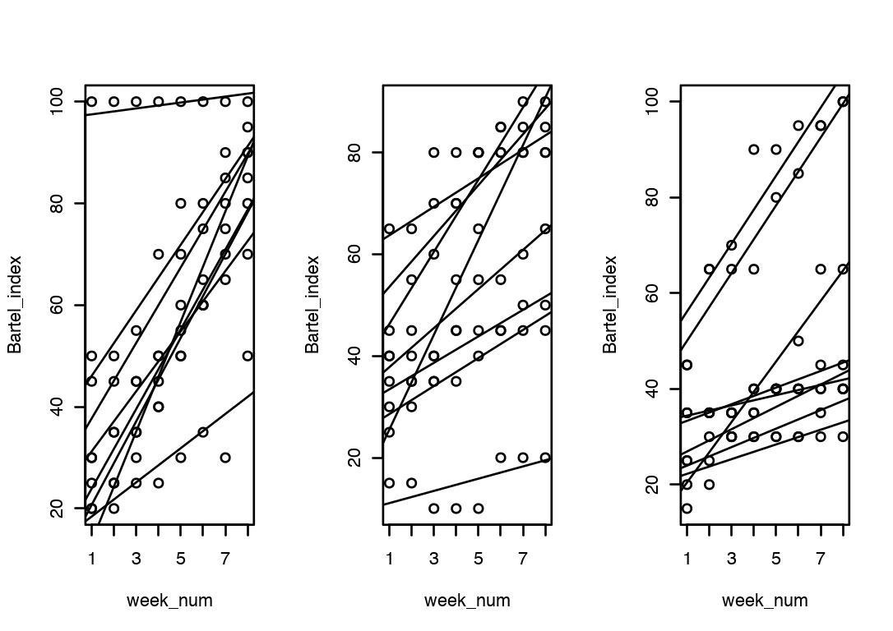

Introduction
- So far we’ve spent quite some time trying to understand GLM. GLM has three components.
- Deterministic model: \(\hat{\mathbf{y}}=f(\mathbf{X})=\mathbf{X}\boldsymbol{\beta}\)
- Link function
- log, logit, probit, cLogLog, LogLog, Robit
- Measurement error model: \(P(\mathbf{y}|\hat{\mathbf{y}})\)
- Normal Linear Model – Gaussian
- Binary Regression – Bernoulli
- Count Regression – Binomial, Poisson,etc
BMUAC from GLM
Let’s re-evaluate GLM from BMUAC framework we’ve talked about very early in the semester.
- Baseline: Reference class, where is the reference?
- Outcome: where \(\beta_0\) is
- Predictor: what that \(\beta_0\) means as a combination of the explanatory variables
- Measurement Unit: On what scale is the difference on?
- Outcome: what is \(g(\mu)\)?
- Predictor: what does unit increase of \(\mathbf{\beta}\) mean
- Uncertainty: the main theme of today
- Outcome: independent measurement error
- Predictor: measurement error model ( not covered in this course )
- Assumptions: need to cover your basis
- Validity: Does the question and the model match?
- Linearity: residuals
- Independence and constant variance of the errors: residuals
- Consequence: what is the bigger implication?
- It depends.
There is nothing to be argued for BMAC but what you might find restrictive is the U, so far, we’ve only looked at cases where we assumed the measurements are independent. If you think about this, this is inconvenient restriction on the cases where we can use GLMs. In this set of tutorials, we will look at how we can expand on that so that we can address bigger set of problems building on what you’ve learned so far.
[Example] Recovery from stroke
- An experiment to promote the recovery of stroke patients was conducted.
- There are 3 experimental groups with 8 patients each:
- A was a new occupational therapy intervention;
- B was the existing stroke rehabilitation program conducted in the same hospital where A was conducted;
- C was the usual care regime for stroke patients provided in a different hospital.
- The response variable was a measure of functional ability, the Bartel index;
- higher scores correspond to better outcomes and
- the maximum score is 100.
- Each patient was assessed weekly over the eight weeks of the study.
Below, is a plot where each patient as a line. 
- Note from visualization perspective that it is important to conned the dots to show continuity. It highlights the trend, which is not available when you look at the agregates.
- Now let’s take a moment to think about what are the
- Baseline?
- Measurement Unit?
- Uncertainty?
- Assumptions?
- Comparisons?
- Was that easy for you? If not, it may be good to go back to the questions that the researchers were interested in.
- Is the new treatment (A) better than the old one?
- How would you formulate this problem? Explain using figure.
- Can you translate the inference into a regression parameter?
- What are ways you can do inference?

- Hints:
- why are the lines wiggly? why are the patterns so messy?
- Did all the patients start out the same?
Stroke Recovery
- An experiment to promote the recovery of stroke patients was conducted.
- There are 3 experimental groups with 8 patients each:
- A was a new occupational therapy intervention;
- B was the existing stroke rehabilitation program conducted in the same hospital where A was conducted;
- C was the usual care regime for stroke patients provided in a different hospital.
- The response variable was a measure of functional ability, the Bartel index;
- higher scores correspond to better outcomes and
- the maximum score is 100.
- Each patient was assessed weekly over the eight weeks of the study.
- The above format is called the wide format, which is easier to see the individual units of the data. But we will work with the long format, which can be created using the melt function.
stroke_long <- melt(stroke, id.vars = c("Subject","Group"))
#setnames(stroke_long,c("variable", "value"),c("week","Bartel_index"))
stroke_long$week_num <- as.integer(stroke_long$week)
(stroke_long)- Below, is a plot where each patient as a line.
setnames(stroke_long,c("variable", "value"),c("week","Bartel_index"))
stroke_long$week_num <- as.integer(stroke_long$week)
ggplot(melt(stroke, id.vars = c("Subject","Group")))+aes(x=variable, y=value,group=Subject,color=Group)+geom_line()+facet_grid(.~Group)+ theme(axis.text.x = element_text(angle = 45, hjust = 1))+theme(legend.position="none")+xlab("")+ylab("Bartel index")- Let’s look at the potential model for \(\mathbf{X}\boldsymbol{\beta}\).
Complete pooling within treatment (ignore time)
- For 3 groups(j), 8 patients(i), 8 times(k) nested, the most simple thing we can do is to ignore time and just compare the averages of each group. That is, we assume the conditional means of \(y_{ijk}\) to be \[E(y_{ijk})=\alpha_j\]
- Below I plot the mean +/- sd on top of the jittered points.
sumst<-melt(stroke, id.vars = c("Subject","Group"))%>%group_by(Group)%>%summarise(mean=mean(value),sd=sd(value))
ggplot(melt(stroke, id.vars = c("Subject","Group")))+aes(x=Group, y=value,color=Group)+geom_jitter(alpha=0.3)+ theme(axis.text.x = element_text(angle = 45, hjust = 1))+theme(legend.position="none")+ylab("Bartel index")+
geom_pointrange(data=sumst,aes(x=Group,y=mean,ymin=mean-sd,ymax=mean+sd))
- In R this model would correspond to
stroke_mod0<-glm( Bartel_index~Group, family=gaussian,data=stroke_long)
round(summary(stroke_mod0)$coef,2)## Estimate Std. Error t value Pr(>|t|)
## (Intercept) 58.28 2.96 19.70 0.00
## GroupB -5.63 4.18 -1.34 0.18
## GroupC -12.11 4.18 -2.89 0.00Since there is no coefficient for A, it is clear that A is taken as the baseline, and each of the coefficients for B and C correspond to the difference in the means relative to A.
OK, so the means of what? Means of this:
ggplot(melt(stroke, id.vars = c("Subject","Group")))+aes(x=variable, y=value,group=Subject,color=Group)+geom_line()+facet_grid(.~Group)+ theme(axis.text.x = element_text(angle = 45, hjust = 1))+theme(legend.position="none")+xlab("")+ylab("Bartel index")
- What you are doing is essentially looking at the middle point of all the lines in each group and comparing that. But is your standard error estimates reliable? No way. We can do this, but it’s pretty clear that that’s not the right way to go about this problem.
Complete pooling within treatment (accounting for time)
- For 3 groups(j), 8 patients(i), 8 times(k) nested, the next simple thing we can do is to add time. That is, we assume the conditional means of \(y_{ijk}\) to be
\[E(y_{ijk})=\alpha_j+\beta t_k\]
- In R, this would be
stroke_mod1<-glm( Bartel_index~Group+week_num, family=gaussian,data=stroke_long)- Visually
fa<-function(x){coef(stroke_mod1)[1]+coef(stroke_mod1)[4]*x}
fb<-function(x){coef(stroke_mod1)[1]+coef(stroke_mod1)[2]+coef(stroke_mod1)[4]*x}
fc<-function(x){coef(stroke_mod1)[1]+coef(stroke_mod1)[3]+coef(stroke_mod1)[4]*x}
ggplot(melt(stroke, id.vars = c("Subject","Group")))+aes(x=variable, y=value,color=Group)+geom_point(alpha=0.3)+ theme(axis.text.x = element_text(angle = 45, hjust = 1))+theme(legend.position="none")+ylab("Bartel index")+stat_function(fun=fa,col="red")+stat_function(fun=fb,col="green")+stat_function(fun=fc,col="blue")
- The estimated coefficients are
round(summary(stroke_mod1)$coef,2)## Estimate Std. Error t value Pr(>|t|)
## (Intercept) 36.84 3.97 9.28 0.00
## GroupB -5.63 3.71 -1.51 0.13
## GroupC -12.11 3.71 -3.26 0.00
## week_num 4.76 0.66 7.20 0.00Looking at the estimates and the figure, is this representative of the problem the researchers are interested in?
What this model is assuming is that the rate of the recovery is constant across the groups, and the only thing that differ is the means at week 0, which is where they start out.
Do you buy that?
ggplot(melt(stroke, id.vars = c("Subject","Group")))+aes(x=variable, y=value,group=Subject,color=Group)+geom_line()+facet_grid(.~Group)+ theme(axis.text.x = element_text(angle = 45, hjust = 1))+theme(legend.position="none")+xlab("")+ylab("Bartel index")
Complete pooling within treatment and time
- For 3 groups(j), 8 patients(i), 8 times(k) nested, the more sensible thing to do seems to be to add separate time effects for each group. That is, we assume the conditional means of \(y_{ijk}\) to be \[E(y_{ijk})=\alpha_j +\beta_j t_k\]
dtt<-melt(stroke, id.vars = c("Subject","Group"))
dtt$week<- as.integer(dtt$variable)
ggplot(dtt)+
aes(x=week, y=value,color=Group)+geom_point(alpha=0.3)+stat_smooth(se=FALSE,method="lm")+ theme(axis.text.x = element_text(angle = 45, hjust = 1))+theme(legend.position="none")
round(summary(glm( Bartel_index~Group+week_num:Group, family=gaussian,data=stroke_long))$coef,2)## Estimate Std. Error t value Pr(>|t|)
## (Intercept) 29.82 5.77 5.16 0.00
## GroupB 3.35 8.17 0.41 0.68
## GroupC -0.02 8.17 0.00 1.00
## GroupA:week_num 6.32 1.14 5.53 0.00
## GroupB:week_num 4.33 1.14 3.79 0.00
## GroupC:week_num 3.64 1.14 3.18 0.00stroke_long$group_f2<- (stroke_long$Group)
round(summary(glm( Bartel_index~Group+week_num:Group-1, family=gaussian,data=stroke_long))$coef,2)## Estimate Std. Error t value Pr(>|t|)
## GroupA 29.82 5.77 5.16 0
## GroupB 33.17 5.77 5.74 0
## GroupC 29.80 5.77 5.16 0
## GroupA:week_num 6.32 1.14 5.53 0
## GroupB:week_num 4.33 1.14 3.79 0
## GroupC:week_num 3.64 1.14 3.18 0ggplot(dtt)+
aes(x=week, y=value,color=Group)+geom_point(alpha=0.3)+stat_smooth(se=FALSE,method="lm")+ theme(axis.text.x = element_text(angle = 45, hjust = 1))+theme(legend.position="none")+facet_grid(~Group)+ylab("Bartel index")
No pooling
- All the above models assumed a common trend across patients one way or another. Alternatively, one can fit 24 separate regression line which assumes no commonality across the patients. For 24 patients(i), 8 times(k) nested. \[E(y_{ik})=\alpha_i +\beta_i t_k\]
- In R this will be
lm( Bartel_index~week_num,data=patient_i)
- In this situations, rather than having one intercept and a slope for each condition, we have 24 intercepts and 24 slopes.
nopoolfit<-stroke_long[,{lmfit=lm( Bartel_index~week_num);list(coef=coef(lmfit),se=se.coef(lmfit))}, by=Subject]## Warning in summary.lm(object, ...): essentially perfect fit: summary may be
## unreliablenopoolfit$Group <- rep(c("A","B","C"),each=16)
nopoolfit$Type <- rep(c("alpha","beta"),times=24)
ggplot(nopoolfit) + geom_point() + geom_smooth(method="lm",formula=y~1,se=FALSE)+
geom_pointrange(aes(ymax = coef + 2*se , ymin=coef - 2*se),lwd=0.2)+
aes( y=coef, x=Subject)+geom_pointrange(aes(ymax = coef + se , ymin=coef - se))+
geom_hline(yintercept=0,lty =2)+xlab("coefficients")+ylab("estimate +/- 2 Std.Error")+facet_grid(Type~Group,scale="free") The blue line represent the means of the coefficients in each group. The averages of the slope coefficients tell us the group A might have higher recovery rate.
To summarize
- What are the strength and weakness of these studies?
- Complete pooling within treatment
- Complete pooling within treatment and time
- No pooling
\[\begin{eqnarray*} \mbox{(pool all)} : & E(y_{ijk})=&\alpha_j\\ \mbox{(pool all)} : & E(y_{ijk})=&\alpha_j + \beta t_k\\ \mbox{(pool treat)} : &E(y_{ijk})=&\alpha_j +\beta_j t_k\\ \mbox{(no pool)} : &E(y_{ik})=& \alpha_i +\beta_i t_k \end{eqnarray*}\]
- What might we be missing by proceeding with the above?
Below is a scatter plot on lower triangle and correlation on the upper triangle. 
What you see is that the observations on the closer time points are correlated and the correlation tapers off as the time between the observations get larger.
None of the linear regression model so far was taking this aspect into account. How can we deal with such correlation?
- There are two ways to deal with the correlation in the cluster
- Big model: focus is on covariance matrix
- Small model: focus is on groups
The big model
- The big model approach to dealing with correlation is to directly model the correlation in the usual linear model framework.
Repeated measurement normal linear model
- The repeated measurement normal linear model looks identical to our usual linear regression model \[\mathbf{y}=\mathbf{X}\boldsymbol{\beta}+\boldsymbol{\epsilon}\] one subtle detail is that \(\mathbf{y}\) is ordered so that all the observations from cluster \(1\) is in at the beginning followed by observations from cluster \(2\), all the way to cluster \(N\). \[\mathbf{y}=(\mathbf{y}_1,\mathbf{y}_2,\dots \mathbf{y}_N)^{T}\]
The big difference, however, is in the errors. Since the \(\mathbf{y}_j\) are corrlated within, we will not have a diagonal matrix with identical \(\sigma^2\) on all of the entries. What we have is a more general variance covariance matrix \(\mathbf{V}\), therefore \[\boldsymbol{\epsilon}\sim N(\mathbf{0},\mathbf{V})\] To simplify the problem we will assume correlation is only within the cluster, which translates to block diagonal covariance matrix with blocks corresponding to clusters. \[\begin{eqnarray*} \mathbf{V} = \left[ \begin{array}{cccc} \mathbf{V}_1 & \mathbf{0} & \cdots & \mathbf{0}\\ \mathbf{0} & \mathbf{V}_2 &\cdots & \mathbf{0}\\ \vdots& &\ddots&\\ \mathbf{0} & \mathbf{0} & \cdots & \mathbf{V}_N\\ \end{array} \right] \end{eqnarray*}\] Within a cluster we have \[\begin{eqnarray*} \mathbf{V}_j = \left[ \begin{array}{cccc} \sigma^2_{j11} & \sigma^2_{j12} & \cdots & \sigma^2_{j1n_j}\\ \sigma^2_{j21} & \sigma^2_{j22} &\cdots & \sigma^2_{j2n_j}\\ \vdots& &\ddots&\\ \sigma^2_{jn_j1} & \sigma^2_{jn_j2} & \cdots & \sigma^2_{jn_in_j}\\ \end{array} \right] \end{eqnarray*}\] and outside of the cluster we assume independence. This formulation is more general and we recover linear regression as a special case when \(\mathbf{V}=\sigma^2\mathbf{I}\).
Therefore, \[\mathbf{y}\sim N(\mathbf{X}\boldsymbol{\beta},\mathbf{V})\]
How can we estimate such model? We will use generalized least squares, which we talked about during the bootcamp.
Generalized least squares
Generalized least squares (GLS) is a way to recover the independent error model using a matrix trick so that we can use MLE like we have been for a linear regression estimation.
- For a general linear regression model \[ \mathbf{y}= \mathbf{X}\boldsymbol{\beta} +\boldsymbol{\epsilon}\]
- Where \(Var(\boldsymbol{\epsilon})=\sigma^2\Sigma\) for some known \(\Sigma\).
- There exists lower triangular matrix \(\mathbf{L}\) such that \(\Sigma=\mathbf{L}\mathbf{L}^{T}\).
- Multiplying \(\mathbf{L}^{-1}\) on both sides we get \[\begin{eqnarray} \mathbf{L}^{-1}\mathbf{y}&=& \mathbf{L}^{-1}\mathbf{X}\boldsymbol{\beta} +\mathbf{L}^{-1}\boldsymbol{\epsilon}\\ \mathbf{y}^{\star}&=& \mathbf{X}^{\star}\boldsymbol{\beta} +\boldsymbol{\epsilon}^{\star} \end{eqnarray}\]
- Now \(Var(\boldsymbol{\epsilon}^{\star})=\sigma^2\mathbf{I}\).
Therefore we can use ordinary least squares using \(\mathbf{y}^{\star}\) and \(\mathbf{X}^{\star}\), which gives us \[\mathbf{\hat{\beta}}=(\mathbf{X}^{T}\Sigma^{-1}\mathbf{X})^{-1}\mathbf{X}^{T}\Sigma^{-1}\mathbf{y}\] and \[Var(\mathbf{\hat{\beta}})=\sigma^2(\mathbf{X}^{T}\Sigma^{-1}\mathbf{X})^{-1}\]
GLS for repeated measurement normal linear model
- For \[\mathbf{y}\sim N(\mu=\mathbf{X}\boldsymbol{\beta},\mathbf{V})\]
- For known \(\mathbf{V}\) we use GLS which give us \[\tilde{\boldsymbol{\beta}}=(\mathbf{X}^{T}\mathbf{V}^{-1}\mathbf{X})^{-1}\mathbf{X}^{T}\mathbf{V}^{-1}\mathbf{y}=(\sum_j^J\mathbf{X}_j^{T}\mathbf{V}_j^{-1}\mathbf{X}_j)^{-1}(\sum_j^J\mathbf{X}_j^{T}\mathbf{V}_j^{-1}\mathbf{y}_j)\]
- and \[Var(\tilde{\boldsymbol{\beta}})=(\mathbf{X}^{T}\mathbf{V}^{-1}\mathbf{X})^{-1}=(\sum_j^J\mathbf{X}_j^{T}\mathbf{V}_j^{-1}\mathbf{X}_j)^{-1}\]
- But in reality, we never know \(\mathbf{V}\) so we need to estimate it. The algorithm we will use is an interatively reweighted least squares.
- Estimate \(\hat{\boldsymbol{\beta}}\) and get \[\hat{\boldsymbol{\mu}}=\mathbf{X}\hat{\boldsymbol{\beta}}\]
- Calculate the residuals \[\mathbf{r}=\mathbf{y}-\hat{\boldsymbol{\mu}}\]
- Use variance covariance of \(\mathbf{r}\) to estimate \[\hat{\mathbf{V}}=\frac{1}{n-1}\mathbf{r}\mathbf{r}^{T}\]
- Repeat until convergence.
(Infromation) Sandwich estimator (Huber estimator)
- Unfortunately, the estimated covariance matrix \(\hat{\mathbf{V}}\) is known to under-estimate the variability. The preferred alternative is the Sandwich estimator or the Huber estimator.
- It is consistent estimator of \(Var(\tilde{\boldsymbol{\beta}})\) when \(\mathbf{V}\) is unknown and it is robust to misspecification of \(\mathbf{V}\). \[Var(\tilde{\boldsymbol{\beta}})=\boldsymbol{\mathcal{I}}^{-1}\mathbf{C}\boldsymbol{\mathcal{I}}^{-1}\] where \(\boldsymbol{\mathcal{I}}\) is the information matrix defined as \[\boldsymbol{\mathcal{I}}=(\mathbf{X}^{T}\mathbf{\hat{V}}^{-1}\mathbf{X}) \] and \[\mathbf{C}=\sum^N_i \mathbf{X}^{T}_i\mathbf{\hat{V}}^{-1}_i(\mathbf{y}_i-\mathbf{X}\boldsymbol{\hat{\beta}})(\mathbf{y}_i-\mathbf{X}\boldsymbol{\hat{\beta}})\mathbf{\hat{V}}^{-1}_i\mathbf{X}_i\]
Parametrization of covariance matrix
- Since there are many parameters in the variance covariance matrix and often we don’t have the luxury to estimate all of the parameters, in most cases people would make simplifying assumptions to reduce the number of parameters that needs to be estimated.
- There are many different forms of the variance covariance matrix that one could specify depending on the problem. Here are handful of examples that are popular.
- Equicorrelation/exchangeable covariance matrix assumes all of the observations within a cluster have same covariance. Therefore it assumes no particular structure of associations. \[\begin{eqnarray*} \mathbf{V}_j = \sigma^2\left[ \begin{array}{cccc} 1 & \rho & \cdots &\rho\\ \rho & 1 &\cdots &\rho\\ \vdots&&\ddots&\\ \rho & \rho & \cdots & 1\\ \end{array} \right] \end{eqnarray*}\] where \(\rho\) intra-class correlation coefficient
- Autoregressive model (AR): AR models are used when the correlation is defined as some function of distance between the measurements. In terms of time series, you expect the closer observations to have more correlation than observations far apart. \[\begin{eqnarray*} \mathbf{V}_j = \sigma^2\left[ \begin{array}{ccccc} 1 & \rho &\rho^2 & \cdots &\rho^{n-1}\\ \rho & 1 &\rho &\cdots & \rho^{n-2}\\ \rho^2 & \rho & 1 &\cdots & \rho\\ \vdots&&\ddots&&\\ \rho^{n-1} & \rho & \cdots & \rho & 1\\ \end{array} \right] \end{eqnarray*}\]
- Unstructured: Unstructured covariance matrix is assumes no particular structure of the association but allows for any kind of association. \[\begin{eqnarray*} \mathbf{V}_j = \sigma^2\left[ \begin{array}{cccc} 1 & \rho_{12} & \cdots &\rho_{1n}\\ \rho_{21} & 1 &\cdots &\rho_{2n}\\ \vdots&&\ddots&\\ \rho_{n1} & \rho_{n2} & \cdots & 1\\ \end{array} \right] \end{eqnarray*}\]
Generalized estimating equations (GEEs)
- For GLM, we have something called the generalized estimating equations (GEE), which is essentially the same procedure we’ve described for the linear model for none normal error model. \(E(\mathbf{y}_j)= \boldsymbol{\mu}_j\) and \(g(\boldsymbol{\mu}_j) = \mathbf{X}_j\beta=\boldsymbol{\eta}_j\).
GEE or quasi-score equations is defined as \[\mathbf{U}=\sum^J_j \mathbf{D}^{T}_j\mathbf{V}^{-1}_j(\mathbf{y}_j-\boldsymbol{\mu}_j)=\mathbf{0}\] where \(\mathbf{D}_j\) is matrix of \(\frac{\partial \mathbf{\mu}_j}{\partial \beta_k}\).
- The variance \(\mathbf{V}_j=\mathbf{A}_j \mathbf{R}_j \mathbf{A}_j\psi\) where \(\mathbf{A}_j\) is diagonal matrix with \(\sqrt{Var(y_{ij})}\)
- \(\mathbf{R}_j\) is the correlation matrix \(\mathbf{y}_j\)
\(\psi\) is the overdispersion parameter
Sandwich estimator for GEE
- It is more important for GEE to use the sandwich estimator.
- This is given as \[Var(\tilde{\boldsymbol{\beta}})=\boldsymbol{\mathcal{I}}^{-1}\mathbf{C}\boldsymbol{\mathcal{I}}^{-1}\]
- where the information matrix is \[\boldsymbol{\mathcal{I}}=(\mathbf{D}^{T}\mathbf{\hat{V}}^{-1}\mathbf{D})\]
and \[\mathbf{C}=\sum^N_i \mathbf{D}^{T}_i\mathbf{\hat{V}}^{-1}_i(\mathbf{y}_i-\mathbf{D}\boldsymbol{\hat{\beta}})(\mathbf{y}_i-\mathbf{D}\boldsymbol{\hat{\beta}})\mathbf{\hat{V}}^{-1}_i\mathbf{D}_i\]
Asymptotically \(\boldsymbol{\hat{\beta}}\sim N(\boldsymbol{\beta},Var(\tilde{\boldsymbol{\beta}}))\)
Fitting GEE in R
glm_fit <-glm( Bartel_index~Group*week_num,
family=gaussian,data=stroke_long)
lme_fit <-lmer( Bartel_index~Group*week_num+(1|Subject),
data=stroke_long)
stroke_long<-stroke_long[order(Subject,week_num),]
library(geepack)
glm_ind<-geeglm( Bartel_index~Group*week_num, id=Subject,waves=week_num,
family=gaussian,data=stroke_long, corstr="independence")
glm_exc<-geeglm( Bartel_index~Group*week_num, id=Subject,waves=week_num,
family=gaussian,data=stroke_long, corstr="exchangeable")
glm_ar1<-geeglm( Bartel_index~Group*week_num, id=Subject,waves=week_num,
family=gaussian,data=stroke_long, corstr="ar1")
glm_uns<-geeglm( Bartel_index~Group*week_num, id=Subject,waves=week_num,
family=gaussian,data=stroke_long, corstr="unstructured")
#library(gee)
#round(summary(gee( Bartel_index~Group*week_num, family=gaussian,
# data=stroke_long,id=week, corstr="AR-M", Mv=1))$coef[,2],2)library(gee)
gee_ind<-gee( Bartel_index~Group*week_num, id=Subject,
family=gaussian,data=stroke_long, corstr="independence")## (Intercept) GroupB GroupC week_num
## 29.82142857 3.34821429 -0.02232143 6.32440476
## GroupB:week_num GroupC:week_num
## -1.99404762 -2.68601190gee_exc<-gee( Bartel_index~Group*week_num, id=Subject,
family=gaussian,data=stroke_long, corstr="exchangeable")## (Intercept) GroupB GroupC week_num
## 29.82142857 3.34821429 -0.02232143 6.32440476
## GroupB:week_num GroupC:week_num
## -1.99404762 -2.68601190gee_ar1<-gee( Bartel_index~Group*week_num, id=Subject,
family=gaussian,data=stroke_long, corstr="AR-M",Mv=1)## (Intercept) GroupB GroupC week_num
## 29.82142857 3.34821429 -0.02232143 6.32440476
## GroupB:week_num GroupC:week_num
## -1.99404762 -2.68601190gee_uns<-gee( Bartel_index~Group*week_num, id=Subject,
family=gaussian,data=stroke_long, corstr="unstructured")## (Intercept) GroupB GroupC week_num
## 29.82142857 3.34821429 -0.02232143 6.32440476
## GroupB:week_num GroupC:week_num
## -1.99404762 -2.68601190## Warning in gee(Bartel_index ~ Group * week_num, id = Subject, family =
## gaussian, : Maximum number of iterations consumed## Warning in gee(Bartel_index ~ Group * week_num, id = Subject, family =
## gaussian, : Convergence not achieved; results suspect## Warning in gee(Bartel_index ~ Group * week_num, id = Subject, family =
## gaussian, : Cgee had an error (code= 104). Results suspect.## Warning in gee(Bartel_index ~ Group * week_num, id = Subject, family =
## gaussian, : Working correlation estimate not positive definiterequire(lsmeans)
pondtemp.posthoc <- lsmeans(glm_ar1, pairwise~Group*week_num, adjust = "tukey")
pondtemp.posthoc <- lsmeans(glm_ar1, pairwise~Group*week_num, adjust = "none")
pondtemp.sum <- summary(pondtemp.posthoc)
pondtemp.contrast <- data.frame(pondtemp.sum$contrasts)- Coefficients
## [,1] [,2] [,3] [,4] [,5] [,6]
## glm 29.82 3.35 -0.02 6.32 -1.99 -2.69
## geeglm 29.82 3.35 -0.02 6.32 -1.99 -2.69
## geeglm 29.82 3.35 -0.02 6.32 -1.99 -2.69
## geeglm 33.24 0.12 -5.96 6.08 -2.14 -2.24
## geeglm 27.54 0.92 1.55 6.88 -1.42 -3.07
## lmer 29.82 3.35 -0.02 6.32 -1.99 -2.69- SE
## [,1] [,2] [,3] [,4] [,5] [,6]
## glm 5.77 8.17 8.17 1.14 1.62 1.62
## geeglm 10.18 11.63 10.90 1.13 1.48 1.47
## geeglm 10.18 11.63 10.90 1.13 1.48 1.47
## geeglm 9.76 10.96 10.38 1.04 1.33 1.47
## geeglm 1727.07 2222.04 2010.53 469.58 603.77 546.70
## lmer 7.50 10.60 10.60 0.47 0.66 0.66library(lme4)
lmer_01 <- lmer( Bartel_index~Group*week_num+(1+week_num|Subject),data=stroke_long)
simlmer_01 <- sim(lmer_01)
par(mfrow=c(1,3))
with(stroke_long[stroke_long$Group=="A",],
plot(week_num,Bartel_index,col=factor(Group))
)
for(i in 1:8) abline(fixef(lmer_01)[1]+ranef(lmer_01)$Subject[i,1],fixef(lmer_01)[4]+ranef(lmer_01)$Subject[i,2])
with(stroke_long[stroke_long$Group=="B",],
plot(week_num,Bartel_index,col=factor(Group))
)
for(i in 9:16) abline(fixef(lmer_01)[1]+fixef(lmer_01)[2]+ranef(lmer_01)$Subject[i,1],fixef(lmer_01)[4]+fixef(lmer_01)[5]+ranef(lmer_01)$Subject[i,2])
with(stroke_long[stroke_long$Group=="C",],
plot(week_num,Bartel_index,col=factor(Group))
)
for(i in 17:24) abline(fixef(lmer_01)[1]+fixef(lmer_01)[3]+ranef(lmer_01)$Subject[i,1],fixef(lmer_01)[4]+fixef(lmer_01)[6]+ranef(lmer_01)$Subject[i,2])
library(nlme)
lme_01 <- lme( Bartel_index~Group*week_num,random= ~ 1|Subject,correlation = corAR1(),
data=stroke_long)
simlmer_01 <- sim(lmer_01)The small model
GLMM / Multilevel model / hierarchical model/
- The usual model for \(i =1,2,\cdots, n\) \[y_i=\mu + \alpha_j[i]+e_i\] where
- \(e_i\sim N(0,\sigma_y^2)\)
\(\alpha_j\sim N(\mu_{\alpha},\sigma_{\alpha}^2)\)
- \(E(y_i)=\mu\)
- if ith subject is from j cluster \(Var(y_i)=E[(y_i-\mu)^2]=E[( \alpha_j+e_i)^2]=\sigma_{\alpha}^2+\sigma_y^2\)
- if sth subject and rth subject are from same cluster \(Cov(y_s, y_r)=E[( \alpha_j+e_s)( \alpha_j+e_r)=\sigma_{\alpha}^2\)
if sth subject and rth subject are from different cluster \(Cov(y_s, y_r)=E[( \alpha_j+e_s)( \alpha_k+e_r)=0\)
\[\begin{eqnarray*} \mathbf{V}_j = \left[ \begin{array}{cccc} \sigma^2_{\alpha}+ \sigma^2_{y} & \sigma^2_{\alpha} & \cdots &\sigma^2_{\alpha}\\ \sigma^2_{\alpha} & \sigma^2_{\alpha}+ \sigma^2_{y} &\cdots &\sigma^2_{\alpha}\\ \vdots&&\ddots&\\ \sigma^2_{\alpha} & \sigma^2_{\alpha} & \cdots & \sigma^2_{\alpha}+ \sigma^2_{y} \\ \end{array} \right]= \sigma^2_{\alpha}+\sigma^2_{y} \left[ \begin{array}{cccc} 1 & \rho & \cdots &\rho\\ \rho & 1 &\cdots &\rho\\ \vdots&&\ddots&\\ \rho & \rho & \cdots & 1\\ \end{array} \right] \end{eqnarray*}\]
- in R
lmer(y~x+(1|group))Partial pooling (shrinkage) of group coefficients
- Multilevel modeling partially pools the group-level parameters \(\alpha_j\) toward their mean level, \(\mu_{\alpha}\).
There is more pooling when the group-level standard deviation \(\sigma_{\alpha}^2\) is small, and more smoothing for groups with fewer observations. \[\begin{eqnarray*} \alpha_j &\approx &\frac{\frac{n_j}{\sigma_y^2}}{\frac{n_j}{\sigma_y^2}+ \frac{1}{\sigma_{\alpha}^2}}(\bar{y}_j-\hat{\mu}_j)+\frac{\frac{1}{\sigma_{\alpha}^2}}{\frac{n_j}{\sigma_y^2}+ \frac{1}{\sigma_{\alpha}^2}}(\mu_{\alpha})\\ \alpha_j &\approx &\frac{\frac{n_j}{\sigma_y^2}}{\frac{n_j}{\sigma_y^2}+ \frac{1}{\sigma_{\alpha}^2}}(\mbox{estimate from group j})+\frac{\frac{1}{\sigma_{\alpha}^2}}{\frac{n_j}{\sigma_y^2}+ \frac{1}{\sigma_{\alpha}^2}}(\mbox{estimate from regression}) \end{eqnarray*}\]